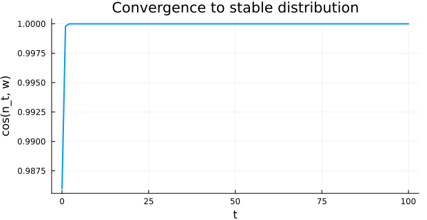

Spectral Diagnostics and Type Hierarchy
Overview
This vignette focuses on diagnostic tools for IPM analysis (eigenanalysis, ergodicity / irreducibility / primitivity checks, damping ratios, time-averaged kernels, area-under-the-curve helpers) and on the type hierarchy that classifies kernels, structures, vital rates and solutions. The model used throughout is the same monocarp from 01_introduction.
Setup
using IntegralProjectionModels
using Distributions
using LinearAlgebra
using Statistics
using PlotsA reference monocarp model
surv_int = -0.65; surv_z = 0.75
flow_int = -18.0; flow_z = 6.9
grow_int = 0.96; grow_z = 0.59; grow_sd = 0.67
rcsz_int = -0.08; rcsz_sd = 0.76
seed_int = 1.0; seed_z = 2.2
p_r = 0.007
L_, U_ = -2.65, 4.5
m = 200
domain = ContinuousDomain(L_, U_, m)
surv = LinearSurvival(surv_int, surv_z)
grow = NormalGrowth(grow_int, grow_z, grow_sd)
fec = LogisticFecundityRate(flow_int, flow_z, seed_int, seed_z, rcsz_int, rcsz_sd)
P = PKernel(surv, grow, domain)
F = FKernel(fec, domain)
K_kernel = P + F
n0 = normal_population(domain, 0.0, 1.0)
prob = IPMProblem(SimpleIPM(), DensityIndependent(), Deterministic(),
K_kernel, domain, n0, (0, 100))
sol = solve(prob)IPMSolution{Vector{Int64}, Vector{Vector{Float64}}, Matrix{Float64}, @NamedTuple{lambda::Float64, stable_dist::Vector{Float64}, repro_value::Vector{Float64}}}([0, 1, 2, 3, 4, 5, 6, 7, 8, 9 … 91, 92, 93, 94, 95, 96, 97, 98, 99, 100], [[0.0004482541793170351, 0.0004921678779177176, 0.0005396934259256982, 0.0005910523316230517, 0.0006464719508222324, 0.0007061848275105376, 0.0007704279375892445, 0.000839441832685769, 0.0009134696816696736, 0.000992756208241267 … 2.496878554551343e-6, 2.150432395428294e-6, 1.8496907002740338e-6, 1.5889761429600276e-6, 1.3632659415944788e-6, 1.168123436867378e-6, 9.996358773802642e-7, 8.543579725403936e-7, 7.292607884627063e-7, 6.216855790762703e-7], [0.0006880442915521177, 0.0008049038184712962, 0.000939530438336587, 0.0010942511410284284, 0.0012716349625297575, 0.0014745083040089146, 0.0017059696859195953, 0.0019694036351460584, 0.0022684933692075477, 0.0026072319084961735 … 1.9243999153532482e-5, 1.6728738066090835e-5, 1.4517860519358485e-5, 1.2578000797571208e-5, 1.087898012993513e-5, 9.393562796246312e-6, 8.097223530668922e-6, 6.967926570163824e-6, 5.985916577222427e-6, 5.133521552704214e-6], [0.003717601529565395, 0.00434902763931954, 0.005076460079369659, 0.0059124745864433835, 0.006870955419974886, 0.007967178293512673, 0.00921789028364536, 0.010641385089410808, 0.012257571831845048, 0.014088035405292552 … 9.794009585258921e-5, 8.505326708786708e-5, 7.376593484398523e-5, 6.389257415335513e-5, 5.5267472564486353e-5, 4.7742834398570506e-5, 4.118703806320674e-5, 3.548303776082143e-5, 3.052690092164876e-5, 2.622647276315619e-5], [0.022225795804307384, 0.02600075057719133, 0.030349663937480776, 0.03534771525026612, 0.041077905776173804, 0.047631554260492384, 0.05510877441769943, 0.06361892457989012, 0.07328101868138855, 0.08422408668715714 … 0.0006303678240686068, 0.0005466577892582032, 0.000473377115078083, 0.00040932290149008684, 0.0003534179592238797, 0.00030469936457716904, 0.0002623078442526622, 0.00022547795588304519, 0.00019352902810284208, 0.00016585682270931873], [0.1396200965487388, 0.1633338291896478, 0.1906530555458449, 0.22205002954300948, 0.25804613803513243, 0.29921501339101914, 0.3461855322451059, 0.3996446392671965, 0.4603399279183723, 0.5290819034711971 … 0.0038272757250934816, 0.0033225407281904846, 0.0028802328282322527, 0.0024932038819751095, 0.0021550480649295965, 0.001860034509175676, 0.0016030448574146363, 0.0013795155174823653, 0.0011853843938202618, 0.00101704186710503], [0.8361317794582893, 0.97814509068981, 1.1417506407379507, 1.3297766641402675, 1.5453456532176144, 1.7918930018761345, 2.07318496828108, 2.3933355902993956, 2.7568221463677833, 3.1684987143897074 … 0.023140959601699793, 0.0200802432615061, 0.017399604079183586, 0.01505528438186495, 0.013008104208299415, 0.011223041715156338, 0.009668844642610003, 0.008317671442995944, 0.007144760627203621, 0.006128126851013422], [5.118397567613167, 5.987732750284951, 6.989244393711039, 8.140245351863257, 9.45984972895426, 10.96908699737177, 12.691011944404933, 14.650808206448787, 16.87588289690443, 19.395949588790803 … 0.14156598188805697, 0.12285541053064891, 0.1064652006816113, 0.0921288086675832, 0.07960747581955853, 0.06868769619621254, 0.05917886992872041, 0.0509111340387455, 0.043733362271433034, 0.037511325272545734], [31.13930929207899, 36.428174715629964, 42.52117681050259, 49.523643932205836, 57.55186297565866, 66.7337736635992, 77.20963746100553, 89.13266748016659, 102.66960420510155, 118.00122037229075 … 0.86029059986488, 0.7465887490670009, 0.6469902545404913, 0.5598741755309403, 0.4837887225543379, 0.41743581039991096, 0.35965674787908575, 0.3094190138554676, 0.2658040672572622, 0.22799613753715517], [189.51532100184116, 221.70360684660488, 258.7859063027526, 301.40325262274337, 350.26337322063165, 406.14491513844047, 469.90151608430267, 542.465638056799, 624.8520712221148, 718.1610066318556 … 5.239983290739146, 4.547346844293295, 3.940631130972152, 3.409960831118433, 2.9464910450852857, 2.5423132266343473, 2.190368032593216, 1.8843647827021275, 1.6187072122785435, 1.3884251926665152], [1154.2598701275085, 1350.3054630853196, 1576.1584733269253, 1835.7231688736638, 2133.3100240310487, 2473.6614548854786, 2861.9766142291587, 3303.9347404806413, 3805.7164982345967, 4374.022692779198 … 31.90425001794254, 27.68736488755753, 23.993534574217737, 20.76264747066742, 17.940863532443714, 15.480041809091242, 13.33721006339013, 11.474074615647382, 9.8565684815103, 8.454435825278015] … [2.4631035925301318e67, 2.8814501334917295e67, 3.3634034638474107e67, 3.917294999277847e67, 4.5523229694993534e67, 5.2786073359575165e67, 6.107242702424681e67, 7.050348139947887e67, 8.1211127261015e67, 9.333835480503125e67 … 6.808607918786004e65, 5.908673253056003e65, 5.120368195021651e65, 4.430863288881207e65, 3.8286676754333946e65, 3.303506895603687e65, 2.8462096788485753e65, 2.4486033186634896e65, 2.1034172227772576e65, 1.8041942156956719e65], [1.499634825956335e68, 1.7543407360313322e68, 2.0477729736679937e68, 2.385004034047663e68, 2.771634162999044e68, 3.213824793060808e68, 3.7183307575447406e68, 4.29253062593346e68, 4.944454429977458e68, 5.682807978015703e68 … 4.1453496240510504e66, 3.597433827936368e66, 3.117482549357985e66, 2.6976847085153198e66, 2.331044216128708e66, 2.0113055753961707e66, 1.7328849542990167e66, 1.4908064860755985e66, 1.2806435467673257e66, 1.098464752701264e66], [9.130369579425538e68, 1.068111983728622e69, 1.2467651284655101e69, 1.4520847277195756e69, 1.687480432511633e69, 1.956703566513491e69, 2.263866739242913e69, 2.6134623154528226e69, 3.010379295875095e69, 3.459918120740022e69 … 2.5238527038995853e67, 2.1902599098177358e67, 1.898046600437973e67, 1.6424570816300114e67, 1.4192318577067454e67, 1.2245623349547948e67, 1.055048855729671e67, 9.076619156663447e66, 7.797064111281501e66, 6.68788760339635e66], [5.55892989506544e69, 6.5030879483853994e69, 7.590798909575016e69, 8.840865786285274e69, 1.027404788165988e70, 1.1913184736994378e70, 1.3783315544619548e70, 1.591179159684324e70, 1.8328379062591037e70, 2.1065349117084114e70 … 1.536621286181482e68, 1.33351680725888e68, 1.155605794225235e68, 9.999927925162333e67, 8.64084452792947e67, 7.455619526608086e67, 6.42355446167959e67, 5.526204513100846e67, 4.747160824641193e67, 4.0718503243432415e67], [3.3844962473245835e70, 3.959336989816995e70, 4.621578416820409e70, 5.382668542617152e70, 6.255246451511796e70, 7.253217759021104e70, 8.391827315157442e70, 9.687727667789342e70, 1.1159041637122783e71, 1.2825417190211592e71 … 9.355557768873566e68, 8.118977420309432e68, 7.035784850270737e68, 6.08835138688681e68, 5.260887694311923e68, 4.539275865249582e68, 3.910913859399143e68, 3.3645717412519764e68, 2.8902591505438024e68, 2.47910342503876e68], [2.0606150939810224e71, 2.41060085967702e71, 2.813799616780529e71, 3.27718136889103e71, 3.808441290116839e71, 4.416045668830289e71, 5.109276172300413e71, 5.898271529892999e71, 6.794065630888158e71, 7.808620934251291e71 … 5.696033365790125e69, 4.94315437140925e69, 4.283663919536467e69, 3.706828977930338e69, 3.2030363748246515e69, 2.7636905702203335e69, 2.3811189438628963e69, 2.048484267130265e69, 1.7597040138056783e69, 1.5093761564112024e69], [1.2545839189211544e72, 1.4676690869256306e72, 1.7131524274430413e72, 1.995277554167313e72, 2.318729593261888e72, 2.6886631557338873e72, 3.110729287492138e72, 3.591100847726967e72, 4.136495704367433e72, 4.754197075270467e72 … 3.4679702595755336e70, 3.009587768831499e70, 2.608063914125008e70, 2.2568640011840916e70, 1.9501351510587005e70, 1.6826440592424382e70, 1.449719331249559e70, 1.2471981920405595e70, 1.0713773592313337e70, 9.189678649679716e69], [7.638402796393658e72, 8.935749525144205e72, 1.043034913414341e73, 1.21480384209284e73, 1.4117342285466857e73, 1.636964403702754e73, 1.8939349476786076e73, 2.1864041411432427e73, 2.5184620876282928e73, 2.894543098048007e73 … 2.1114373721074755e71, 1.8323559933083604e71, 1.5878923995739364e71, 1.3740680107352892e71, 1.1873193627415286e71, 1.0244602129529096e71, 8.826464317608152e70, 7.593435571796478e70, 6.52296884514728e70, 5.595039601339262e70], [4.6505615447491815e73, 5.44043751329355e73, 6.350408832126137e73, 7.396205964835794e73, 8.59519599802342e73, 9.966486330856444e73, 1.1531024575044887e74, 1.3311692628833057e74, 1.5333392659212246e74, 1.7623122503773593e74 … 1.2855265306911202e72, 1.1156107560593457e72, 9.667716573083264e71, 8.36586917570328e71, 7.228869590785177e71, 6.237318713715581e71, 5.373900359241255e71, 4.623183720999892e71, 3.9714412655956424e71, 3.406481263808461e71], [2.8314456906764665e74, 3.3123534016665523e74, 3.86637990890777e74, 4.503102540409311e74, 5.233095064960715e74, 6.067990822431176e74, 7.02054354682369e74, 8.104684642239656e74, 9.335575532248594e74, 1.072965356751652e75 … 7.826793647501234e72, 6.792279249122184e72, 5.8860879844596035e72, 5.093471830956204e72, 4.4012215416008965e72, 3.797526174718787e72, 3.2718429522727695e72, 2.814776989417679e72, 2.417970421215432e72, 2.074000441015729e72]], [1.4015838680187219e-5 1.3050870347912998e-5 … 3.2156655786071293 3.4787917653353184; 1.6463771079498542e-5 1.535603971184432e-5 … 3.7617690582876526 4.069580901112448; … ; 7.478103236931973e-16 9.710852016540737e-16 … 0.00871081455387184 0.009082859029502791; 4.998950230418838e-16 6.502407984407881e-16 … 0.008117484835962082 0.008478268576668871], (lambda = 6.0883952688309915, stable_dist = [6.296435429788495e-5, 7.365855323628322e-5, 8.597873349162892e-5, 0.00010013787116866716, 0.00011637110075241416, 0.00013493711896998836, 0.00015611953734501178, 0.00018022815587350618, 0.00020760012714449516, 0.00023860097721219972 … 1.7404854695320873e-6, 1.5104350351531585e-6, 1.308920494231705e-6, 1.1326622510454646e-6, 9.787228955231182e-7, 8.444759661412704e-7, 7.27577009627157e-7, 6.259368357839488e-7, 5.376968620124066e-7, 4.6120643956671267e-7], repro_value = [0.001371834730012231, 0.0014641675040645123, 0.0015626689915995723, 0.001667746084265538, 0.0017798321024922574, 0.0018993885015843748, 0.0020269066914397654, 0.002162909978302219, 0.002307955637690644, 0.0024626371284520096 … 1903.8454765192273, 2054.3864005143555, 2217.0417550701063, 2392.7994258497397, 2582.7282971880477, 2787.9849035680695, 3009.820624581575, 3249.58946789168, 3508.7564883344294, 3788.9068952142775]), :Success, [10.65483557008735, 5.568422309749415, 5.958272396956879, 6.262394534447531, 6.003339492578355, 6.115074852369366, 6.085409067034016, 6.086054394781214, 6.0903295341487125, 6.087559046424219 … 6.088395268896876, 6.0883952688968765, 6.088395268896876, 6.088395268896876, 6.088395268896875, 6.088395268896876, 6.088395268896876, 6.088395268896876, 6.088395268896877, 6.088395268896876])The solution object has type IPMSolution, which is a subtype of the shared AbstractProjectionSolution:
println("typeof(sol) = ", typeof(sol).name.name)
println("sol isa IPMSolution = ", sol isa IPMSolution)
println("sol isa AbstractProjectionSolution = ", sol isa AbstractProjectionSolution)typeof(sol) = IPMSolution
sol isa IPMSolution = true
sol isa AbstractProjectionSolution = trueEigenanalysis
eigenanalysis_power runs power iteration to obtain the dominant eigenvalue $\lambda_1$, the stable size distribution $w$ and reproductive value $v$. It is fast and robust for large kernels.
K = sol.kernel_matrices
ea_pow = eigenanalysis_power(K)
println("λ₁ (power) = ", round(ea_pow.lambda, digits=5))
println("‖w‖₁ (stable) = ", round(sum(ea_pow.stable_dist), digits=5))
println("‖v‖∞ (repro val) = ", round(maximum(ea_pow.repro_value), digits=5))λ₁ (power) = 6.0884
‖w‖₁ (stable) = 1.0
‖v‖∞ (repro val) = 3788.9069eigenanalysis_full returns the full eigendecomposition. The first two real parts give the dominant and subdominant eigenvalues; damping_ratio is the modulus ratio $|\lambda_1|/|\lambda_2|$ and quantifies how quickly transient dynamics decay onto the stable distribution.
ea_full = eigenanalysis_full(K)
ρ = damping_ratio(K)
λ_sorted = sort(abs.(eigvals(K)); rev=true)
println("λ₁ (full) = ", round(ea_full.lambda, digits=5))
println("|λ₂| = ", round(λ_sorted[2], digits=5))
println("damping ratio = ", round(ρ, digits=5))λ₁ (full) = 6.0884
|λ₂| = 2.42188
damping ratio = 2.51391Matrix properties
is_irreducible, is_primitive and is_ergodic test the structural properties that justify Perron–Frobenius style asymptotic analysis.
println("is_irreducible(K) = ", is_irreducible(K))
println("is_primitive(K) = ", is_primitive(K))
println("is_ergodic(K) = ", is_ergodic(K))is_irreducible(K) = true
is_primitive(K) = true
is_ergodic(K) = trueA reducible counter-example: an upper-triangular kernel whose two halves do not mix.
K_red = copy(K); K_red[101:end, 1:100] .= 0.0
println("reducible kernel: is_irreducible = ", is_irreducible(K_red),
", is_primitive = ", is_primitive(K_red),
", is_ergodic = ", is_ergodic(K_red))reducible kernel: is_irreducible = false, is_primitive = false, is_ergodic = falseTime-averaged kernel and AUC integration
For deterministic models mean_kernel simply returns the single kernel; for stochastic kernel-resampled solutions it averages all per-step kernels.
K_bar = mean_kernel(sol)
println("K̄ matches deterministic K? ", isapprox(K_bar, K))K̄ matches deterministic K? truearea_under_curve integrates a tabulated function via the trapezoidal rule. We verify it on the stable size distribution $w(z)$ — the result is the $L_1$-norm of $w$.
z = meshpoints(domain)
w = ea_pow.stable_dist
auc = area_under_curve(z, w)
println("∫ w(z) dz ≈ ", round(auc, digits=5))∫ w(z) dz ≈ 0.03575Type hierarchy
The classification of an IPM is encoded by trait objects. All trait constants exported by IntegralProjectionModels are subtypes of the shared abstract types defined in StructuredPopulationCore.
println("SimpleContinuousState() isa AbstractContinuousStateStructure = ",
SimpleContinuousState() isa AbstractContinuousStateStructure)
println("GeneralContinuousState() isa AbstractContinuousStateStructure = ",
GeneralContinuousState() isa AbstractContinuousStateStructure)
println("SimpleIPM() isa AbstractIPMStructure = ",
SimpleIPM() isa AbstractIPMStructure)
println("DensityIndependent() isa AbstractDensityDependence = ",
DensityIndependent() isa AbstractDensityDependence)
println("Deterministic() isa AbstractStochasticity = ",
Deterministic() isa AbstractStochasticity)SimpleContinuousState() isa AbstractContinuousStateStructure = true
GeneralContinuousState() isa AbstractContinuousStateStructure = true
SimpleIPM() isa AbstractIPMStructure = true
DensityIndependent() isa AbstractDensityDependence = true
Deterministic() isa AbstractStochasticity = trueSub-kernels and composed kernels share an abstract supertype and a kernel family enum.
println("PKernel <: AbstractSubKernel = ", PKernel <: AbstractSubKernel)
println("AbstractSubKernel <: AbstractIPMKernel = ", AbstractSubKernel <: AbstractIPMKernel)
for v in instances(KernelFamily)
println(" KernelFamily value: ", v)
end
for v in instances(EvictionCorrection)
println(" EvictionCorrection value: ", v)
endPKernel <: AbstractSubKernel = true
AbstractSubKernel <: AbstractIPMKernel = true
KernelFamily value: CC
KernelFamily value: CD
KernelFamily value: DC
KernelFamily value: DD
EvictionCorrection value: NoCorrection
EvictionCorrection value: TruncatedDistributions
EvictionCorrection value: DiscreteExtremaVital-rate types form their own hierarchy:
println("LinearSurvival <: AbstractSurvivalRate = ",
LinearSurvival <: AbstractSurvivalRate)
println("NormalGrowth <: AbstractGrowthRate = ",
NormalGrowth <: AbstractGrowthRate)
println("LogisticFecundityRate <: AbstractFecundityRate = ",
LogisticFecundityRate <: AbstractFecundityRate)
println("RecruitmentDistribution <: AbstractRecruitmentRate = ",
RecruitmentDistribution <: AbstractRecruitmentRate)
println("AbstractSurvivalRate <: AbstractVitalRate = ",
AbstractSurvivalRate <: AbstractVitalRate)LinearSurvival <: AbstractSurvivalRate = true
NormalGrowth <: AbstractGrowthRate = true
LogisticFecundityRate <: AbstractFecundityRate = true
RecruitmentDistribution <: AbstractRecruitmentRate = true
AbstractSurvivalRate <: AbstractVitalRate = trueThe shared AbstractProjectionStructure covers both IPM and matrix structure tags (AbstractIPMStructure <: AbstractProjectionStructure).
println("AbstractIPMStructure <: AbstractProjectionStructure = ",
AbstractIPMStructure <: AbstractProjectionStructure)AbstractIPMStructure <: AbstractProjectionStructure = trueVisual: damping over the iteration
The eigen analysis predicts that any initial condition relaxes onto $w$ at a rate set by the damping ratio. Plotting cosine similarity of $n_t$ vs. $w$ makes that visible:
sim(a, b) = (a ⋅ b) / (norm(a) * norm(b))
sims = [sim(sol.u[t], w) for t in eachindex(sol.u)]
plot(sol.t, sims, lw=2, xlabel="t", ylabel="cos(n_t, w)",
title="Convergence to stable distribution",
legend=false, size=(620, 320))
Summary
IPMSolutionis the concrete result type; it inherits fromAbstractProjectionSolution.eigenanalysis_poweris fast and stable;eigenanalysis_fullexposes the whole spectrum and underpinsdamping_ratio.is_irreducible,is_primitive,is_ergodictest structural assumptions before relying on asymptotic theory.mean_kernelandarea_under_curveare utility helpers that work on solutions and tabulated functions, respectively.- All structures, kernels, vital rates and solutions are organised under abstract types re-exported from
StructuredPopulationCore, enabling uniform dispatch across packages.